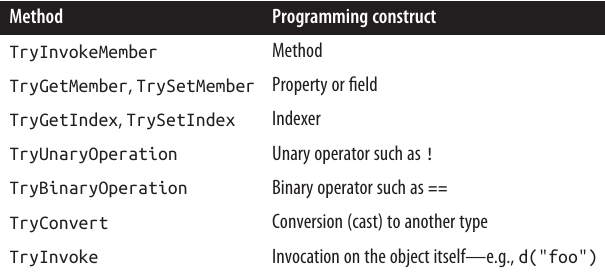

فصل نوزدهم: برنامهنویسی پویا (Dynamic Programming)
فصل ۴ توضیح داد که dynamic binding در زبان C# چگونه کار میکند.
در این فصل، ابتدا بهطور مختصر به Dynamic Language Runtime (DLR) میپردازیم و سپس الگوهای زیر در برنامهنویسی پویا را بررسی میکنیم:
- Dynamic member overload resolution
- Custom binding (implementing dynamic objects)
- Dynamic language interoperability
در فصل ۲۴، توضیح میدهیم که dynamic چگونه میتواند COM interoperability را بهبود دهد.
انواع (types) معرفیشده در این فصل، در System.Dynamic namespace قرار دارند، بهجز CallSite<> که در System.Runtime.CompilerServices تعریف شده است.
🌀 Dynamic Language Runtime
زبان C# برای انجام dynamic binding به DLR متکی است.
برخلاف نامش، DLR یک نسخهی پویا از CLR نیست. بلکه یک کتابخانه (library) است که روی CLR قرار میگیرد—دقیقاً مانند هر کتابخانهی دیگری مثل System.Xml.dll.
وظیفهی اصلی DLR ارائهی سرویسهای زمان اجرا (runtime services) برای یکپارچهسازی برنامهنویسی پویا—چه در زبانهای statically typed و چه dynamically typed—است. بنابراین، زبانهایی مانند:
- C#
- Visual Basic
- IronPython
- IronRuby
همگی از یک پروتکل یکسان برای dynamic function calls استفاده میکنند. این موضوع باعث میشود آنها بتوانند کتابخانهها را به اشتراک بگذارند و کدی را که به زبان دیگری نوشته شده اجرا کنند.
DLR همچنین نوشتن زبانهای پویا جدید در .NET را نسبتاً آسان میکند. بهجای آنکه نویسندگان زبان مجبور باشند مستقیم Intermediate Language (IL) تولید کنند، میتوانند در سطح expression trees کار کنند (همان expression trees موجود در System.Linq.Expressions که در فصل ۸ دربارهشان صحبت کردیم).
علاوه بر این، DLR تضمین میکند که همهی مصرفکنندگان از مزیت call-site caching بهرهمند شوند؛ یک بهینهسازی که از تکرار غیرضروری تصمیمات پرهزینهی member resolution در طول dynamic binding جلوگیری میکند.
❓ Call Site چیست؟
وقتی کامپایلر با یک dynamic expression روبهرو میشود، نمیداند چه کسی آن عبارت را در زمان اجرا ارزیابی خواهد کرد.
مثلاً متد زیر را در نظر بگیرید:
public dynamic Foo (dynamic x, dynamic y)
{
return x / y; // Dynamic expression
}
متغیرهای x و y میتوانند هر چیزی باشند:
- یک شیء CLR
- یک شیء COM
- یا حتی یک شیء در یک زبان پویا
به همین دلیل، کامپایلر نمیتواند از روش معمول استاتیک خود (یعنی صدا زدن یک متد مشخص از یک نوع مشخص) استفاده کند.
در عوض، کامپایلر کدی تولید میکند که در نهایت یک expression tree میسازد؛ این expression tree عملیاتی را توصیف میکند که توسط یک call site مدیریت میشود و DLR آن را در زمان اجرا bind میکند.
درواقع، call site مانند یک واسطه (intermediary) بین caller و callee عمل میکند.
یک call site توسط کلاس CallSite<> در System.Core.dll نمایش داده میشود.
با disassemble کردن متد قبلی، نتیجه تقریباً بهشکل زیر خواهد بود:
static CallSite<Func<CallSite,object,object,object>> divideSite;
[return: Dynamic]
public object Foo ([Dynamic] object x, [Dynamic] object y)
{
if (divideSite == null)
divideSite =
CallSite<Func<CallSite,object,object,object>>.Create (
Microsoft.CSharp.RuntimeBinder.Binder.BinaryOperation (
CSharpBinderFlags.None,
ExpressionType.Divide,
/* Remaining arguments omitted for brevity */ ));
return divideSite.Target (divideSite, x, y);
}
همانطور که میبینید، call site در یک static field ذخیره میشود تا هزینهی ساخت مجدد آن در هر بار فراخوانی اجتناب شود.
همچنین، DLR نتیجهی binding phase و method targets واقعی را cache میکند. (ممکن است چندین target بسته به نوعهای x و y وجود داشته باشد.)
فراخوانی پویا (dynamic call) در عمل با صدا زدن Target (که یک delegate است) انجام میشود و عملوندهای x و y به آن پاس داده میشوند.
نکتهی مهم: کلاس Binder مخصوص هر زبان است.
هر زبانی که از dynamic binding پشتیبانی میکند، یک language-specific binder دارد تا به DLR کمک کند عبارات را مطابق منطق آن زبان تفسیر کند و رفتار غیرمنتظره برای برنامهنویس ایجاد نشود.
مثلاً اگر متد Foo را با مقادیر عددی 5 و 2 صدا بزنیم:
- C# binder نتیجهی
2را برمیگرداند. - اما VB.NET binder نتیجهی
2.5را خواهد داد.
⚡ Dynamic Member Overload Resolution
فراخوانی یک متد statically known با آرگومانهای dynamically typed باعث میشود که member overload resolution از زمان کامپایل به زمان اجرا منتقل شود.
این ویژگی برای سادهسازی برخی وظایف برنامهنویسی مفید است—مثل سادهتر کردن Visitor design pattern.
همچنین در دور زدن محدودیتهای اعمالشده توسط static typing در C# بسیار کاربرد دارد.
🎯 سادهسازی الگوی Visitor
بهطور خلاصه، Visitor pattern این امکان را میدهد که بدون تغییر در کلاسهای موجود، یک متد به یک سلسلهمراتب کلاسی (class hierarchy) “اضافه” کنید.
اگرچه این الگو مفید است، اما نسخهی استاتیک آن در مقایسه با بسیاری از الگوهای طراحی دیگر، ظریف و غیرمستقیم است. همچنین، این الگو نیاز دارد که کلاسهایی که قرار است بازدید شوند، “visitor-friendly” باشند؛ یعنی یک متد Accept را در اختیار قرار دهند. این موضوع زمانی غیرممکن است که کلاسها تحت کنترل شما نباشند.
با استفاده از dynamic binding میتوانید به همان هدف دست پیدا کنید—اما بسیار سادهتر و بدون نیاز به تغییر کلاسهای موجود.
برای روشن شدن موضوع، به سلسلهمراتب کلاس زیر دقت کنید:
class Person
{
public string FirstName { get; set; }
public string LastName { get; set; }
// مجموعه Friends میتواند شامل Customers و Employees باشد:
public readonly IList<Person> Friends = new Collection<Person> ();
}
class Customer : Person { public decimal CreditLimit { get; set; } }
class Employee : Person { public decimal Salary { get; set; } }
فرض کنید میخواهیم متدی بنویسیم که جزئیات یک Person را بهصورت برنامهنویسی به یک XElement در XML صادر کند.
واضحترین راه این است که در کلاس Person یک متد مجازی (virtual) به نام ToXElement() تعریف کنیم که یک XElement شامل propertyهای یک Person برگرداند.
سپس در کلاسهای Customer و Employee آن را override کنیم تا XElement به ترتیب شامل CreditLimit و Salary هم باشد.
اما این الگو میتواند از دو جهت مشکلساز باشد:
- ممکن است مالک کلاسهای Person، Customer و Employee نباشید و بنابراین نتوانید به آنها متدی اضافه کنید. (و extension methodها هم رفتار polymorphic ارائه نمیدهند.)
- کلاسهای Person، Customer و Employee ممکن است همین حالا هم خیلی بزرگ باشند. یک antipattern رایج، God Object است؛ جایی که یک کلاسی مثل Person آنقدر عملکردهای مختلف به خود میگیرد که نگهداری آن کابوسوار میشود. یک راهحل خوب این است که از افزودن توابعی به Person که نیازی به دسترسی به وضعیت خصوصی آن ندارند، پرهیز کنیم. متد ToXElement میتواند یک کاندید عالی برای بیرون کشیده شدن باشد.
با استفاده از dynamic member overload resolution میتوانیم قابلیت ToXElement را در یک کلاس جداگانه پیادهسازی کنیم، بدون آنکه مجبور شویم از switchهای زشت بر اساس نوع استفاده کنیم:
class ToXElementPersonVisitor
{
public XElement DynamicVisit (Person p) => Visit ((dynamic)p);
XElement Visit (Person p)
{
return new XElement ("Person",
new XAttribute ("Type", p.GetType().Name),
new XElement ("FirstName", p.FirstName),
new XElement ("LastName", p.LastName),
p.Friends.Select (f => DynamicVisit (f))
);
}
XElement Visit (Customer c) // منطق اختصاصی برای Customer
{
XElement xe = Visit ((Person)c); // صدا زدن متد "base"
xe.Add (new XElement ("CreditLimit", c.CreditLimit));
return xe;
}
XElement Visit (Employee e) // منطق اختصاصی برای Employee
{
XElement xe = Visit ((Person)e); // صدا زدن متد "base"
xe.Add (new XElement ("Salary", e.Salary));
return xe;
}
}
متد DynamicVisit یک dynamic dispatch انجام میدهد—یعنی در زمان اجرا، دقیقترین نسخهی متد Visit را فراخوانی میکند.
به خطی که در آن متد DynamicVisit روی هر Person در مجموعهی Friends صدا زده میشود توجه کنید. این تضمین میکند که اگر یک دوست از نوع Customer یا Employee باشد، overload صحیح فراخوانی شود.
📌 مثال اجرا
var cust = new Customer
{
FirstName = "Joe", LastName = "Bloggs", CreditLimit = 123
};
cust.Friends.Add (
new Employee { FirstName = "Sue", LastName = "Brown", Salary = 50000 }
);
Console.WriteLine (new ToXElementPersonVisitor().DynamicVisit (cust));
📤 خروجی
<Person Type="Customer">
<FirstName>Joe</FirstName>
<LastName>Bloggs</LastName>
<Person Type="Employee">
<FirstName>Sue</FirstName>
<LastName>Brown</LastName>
<Salary>50000</Salary>
</Person>
<CreditLimit>123</CreditLimit>
</Person>
🔀 گونهها (Variations)
اگر قصد داشته باشید بیش از یک کلاس Visitor بنویسید، یک تغییر مفید این است که یک کلاس پایهی انتزاعی (abstract base class) برای Visitorها تعریف کنید:
abstract class PersonVisitor<T>
{
public T DynamicVisit (Person p) { return Visit ((dynamic)p); }
protected abstract T Visit (Person p);
protected virtual T Visit (Customer c) { return Visit ((Person) c); }
protected virtual T Visit (Employee e) { return Visit ((Person) e); }
}
در این حالت، کلاسهای فرزند نیازی ندارند که متد DynamicVisit خودشان را تعریف کنند؛ تنها کاری که باید انجام دهند این است که نسخههای Visit را که میخواهند منطق اختصاصی برایشان بنویسند، override کنند.
این روش دو مزیت دارد:
- متمرکز کردن متدهایی که سلسلهمراتب Person را در بر میگیرند.
- اجازه دادن به پیادهسازان برای صدا زدن متدهای پایه (base methods) به شکلی طبیعیتر.
نمونه:
class ToXElementPersonVisitor : PersonVisitor<XElement>
{
protected override XElement Visit (Person p)
{
return new XElement ("Person",
new XAttribute ("Type", p.GetType().Name),
new XElement ("FirstName", p.FirstName),
new XElement ("LastName", p.LastName),
p.Friends.Select (f => DynamicVisit (f))
);
}
protected override XElement Visit (Customer c)
{
XElement xe = base.Visit (c);
xe.Add (new XElement ("CreditLimit", c.CreditLimit));
return xe;
}
protected override XElement Visit (Employee e)
{
XElement xe = base.Visit (e);
xe.Add (new XElement ("Salary", e.Salary));
return xe;
}
}
حتی میتوانید از روی ToXElementPersonVisitor هم کلاس فرزند بسازید.
📌 صدا زدن ناشناس اعضای یک نوع Generic
سختگیری static typing در C# یک شمشیر دو لبه است:
- از یک طرف در زمان کامپایل میزان مشخصی از صحت را تضمین میکند.
- از طرف دیگر، گاهی اوقات نوشتن برخی از انواع کد را دشوار یا غیرممکن میسازد، و در این مواقع باید از reflection استفاده کنید.
در چنین شرایطی، dynamic binding یک جایگزین تمیزتر و سریعتر از reflection است.
مثال: وقتی نیاز دارید با یک شیء از نوع G<T> کار کنید در حالی که نوع T ناشناخته است.
public class Foo<T> { public T Value; }
فرض کنید متدی به شکل زیر داریم:
static void Write (object obj)
{
if (obj is Foo<>) // Illegal
Console.WriteLine ((Foo<>) obj).Value); // Illegal
}
این کد کامپایل نمیشود: چون نمیتوانید اعضای یک نوع generic غیرمتحد (unbound) را فراخوانی کنید.
✨ راهحل با dynamic binding
راه اول این است که Value را بهصورت پویا (dynamic) صدا بزنید:
static void Write (dynamic obj)
{
try { Console.WriteLine (obj.Value); }
catch (Microsoft.CSharp.RuntimeBinder.RuntimeBinderException) {...}
}
🐾 Multiple Dispatch
زبان C# و CLR همیشه یک شکل محدود از پویایی را با virtual method calls پشتیبانی کردهاند.
تفاوت آن با dynamic binding در این است که در virtual calls، کامپایلر باید در زمان کامپایل متعهد شود که کدام عضو مجازی صدا زده خواهد شد (بر اساس نام و امضای متدی که فراخوانی شده است).
به این معنی که:
- عبارت فراخوانی باید کاملاً توسط کامپایلر درک شود (مثلاً باید در زمان کامپایل مشخص شود که آیا یک عضو هدف یک field است یا یک property).
- Overload resolution باید کاملاً توسط کامپایلر و بر اساس نوعهای زمان کامپایل آرگومانها انجام شود.
مثال:
animal.Walk (owner);
نتیجه: توانایی انجام virtual calls به نام single dispatch شناخته میشود. چرا؟
چون تصمیم زمان اجرا برای اینکه متد Walk سگ صدا زده شود یا متد Walk گربه، فقط به نوع دریافتکننده (receiver type)، یعنی animal بستگی دارد (به همین دلیل "single").
اگر چندین overload از Walk وجود داشته باشد که انواع مختلفی از owner را بپذیرند، انتخاب آنها در زمان کامپایل و بدون توجه به نوع واقعی owner انجام میشود.
💡 Dynamic Multiple Dispatch
در مقابل، یک فراخوانی پویا (dynamic call) انتخاب overload را تا زمان اجرا به تأخیر میاندازد:
animal.Walk ((dynamic) owner);
این بار انتخاب نهایی اینکه کدام متد Walk فراخوانی شود به نوعهای هر دو یعنی animal و owner بستگی دارد.
به همین دلیل به آن multiple dispatch میگویند: چون نوعهای زمان اجرا (runtime types) آرگومانها علاوه بر receiver type، در تصمیمگیری دخالت دارند.
⚠️ مشکلات و راهحل بهتر
روش قبلی این مزیت را دارد که با هر شیئی که یک Value field یا Value property داشته باشد کار میکند.
اما مشکلاتی هم دارد:
-
گرفتن exception در این روش شلوغ و ناکارآمد است (و هیچ راهی نیست که از قبل از DLR بپرسیم "آیا این عملیات موفق خواهد شد؟").
-
اگر Foo یک interface مثل
IFoo<T>باشد و یکی از شرایط زیر برقرار باشد، این روش کار نمیکند:- Value بهصورت explicitly implemented تعریف شده باشد.
- نوعی که IFoo
را پیادهسازی کرده، غیرقابل دسترسی باشد.
✅ راهحل بهتر: متد کمکی overload شده
static void Write (dynamic obj)
{
object result = GetFooValue (obj);
if (result != null) Console.WriteLine (result);
}
static T GetFooValue<T> (Foo<T> foo) => foo.Value;
static object GetFooValue (object foo) => null;
اینجا ما متد GetFooValue را overload کردیم تا یک پارامتر از نوع object هم بگیرد، که نقش fallback را دارد.
در زمان اجرا، C# dynamic binder بهترین overload را انتخاب میکند. اگر شیء دادهشده از نوع Foo<T> نباشد، نسخهی object-parameter انتخاب میشود و بهجای پرتاب exception مقدار null برمیگرداند.
🆚 گزینهی دیگر
فقط overload اول را بنویسیم و سپس RuntimeBinderException را catch کنیم.
- مزیت: میتوانیم تمایز قائل شویم بین زمانی که
foo.Valueواقعاً null است یا اصلاً وجود ندارد. - عیب: هزینهی کارایی بهخاطر پرتاب و گرفتن exception.
🔎 مثال: ToStringEx با dynamic binding
در فصل ۱۸، همین مشکل را برای یک interface با استفاده از reflection حل کردیم (که تلاش بیشتری نیاز داشت).
مثال ما طراحی نسخهی قدرتمندتری از ToString() بود که میتوانست اشیائی مانند IEnumerable و IGrouping<,> را درک کند.
اینجا همان مثال با dynamic binding، اما زیباتر:
static string GetGroupKey<TKey,TElement> (IGrouping<TKey,TElement> group)
=> "Group with key=" + group.Key + ": ";
static string GetGroupKey (object source) => null;
public static string ToStringEx (object value)
{
if (value == null) return "<null>";
if (value is string s) return s;
if (value.GetType().IsPrimitive) return value.ToString();
StringBuilder sb = new StringBuilder();
string groupKey = GetGroupKey ((dynamic)value); // Dynamic dispatch
if (groupKey != null) sb.Append (groupKey);
if (value is IEnumerable)
foreach (object element in ((IEnumerable)value))
sb.Append (ToStringEx (element) + " ");
if (sb.Length == 0) sb.Append (value.ToString());
return "\r\n" + sb.ToString();
}
▶️ اجرای کد
Console.WriteLine (ToStringEx ("xyyzzz".GroupBy (c => c) ));
🔽 خروجی:
Group with key=x: x
Group with key=y: y y
Group with key=z: z z z
در اینجا از dynamic member overload resolution برای حل مسئله استفاده کردیم.
اگر بهجای آن، چنین کاری میکردیم:
dynamic d = value;
try { groupKey = d.Value; }
catch (Microsoft.CSharp.RuntimeBinder.RuntimeBinderException) {...}
این روش شکست میخورد. چرا؟ چون عملگر GroupBy در LINQ یک نوعی را برمیگرداند که IGrouping<,> را پیادهسازی میکند و خودش internal است:
internal class Grouping : IGrouping<TKey,TElement>, ...
{
public TKey Key;
...
}
حتی اگر property Key بهصورت public تعریف شده باشد، کلاس حاوی آن internal است و بنابراین فقط از طریق IGrouping<,> قابل دسترسی است.
و همانطور که در فصل ۴ توضیح دادیم، هیچ راهی وجود ندارد که به DLR بگوییم هنگام صدا زدن dynamic member، به آن interface bind شود.
پیادهسازی اشیای پویا 🦆✨
یک شیء میتواند با پیادهسازی IDynamicMetaObjectProvider معناشناسی (binding semantics) خودش را فراهم کند—یا راحتتر از آن، با ارثبری از کلاس DynamicObject، که یک پیادهسازی پیشفرض از این اینترفیس ارائه میدهد.
این موضوع بهطور مختصر در فصل ۴ با مثال زیر نشان داده شده است:
dynamic d = new Duck();
d.Quack(); // متد Quack فراخوانی شد
d.Waddle(); // متد Waddle فراخوانی شد
public class Duck : DynamicObject
{
public override bool TryInvokeMember(
InvokeMemberBinder binder, object[] args, out object result)
{
Console.WriteLine (binder.Name + " method was called");
result = null;
return true;
}
}
DynamicObject 🛠️
در مثال بالا، ما متد TryInvokeMember را بازنویسی (override) کردیم، که به مصرفکننده اجازه میدهد روی شیء پویا (dynamic object) یک متد فراخوانی کند—مثل Quack یا Waddle.
کلاس DynamicObject متدهای مجازی (virtual methods) دیگری هم در اختیار قرار میدهد که به مصرفکننده اجازه میدهند از دیگر ساختارهای برنامهنویسی استفاده کند. موارد زیر متناظر با ساختارهایی هستند که در زبان C# نمایش دارند:

متدهای پویا در DynamicObject ⚡
این متدها باید در صورت موفقیت، مقدار true برگردانند. اگر مقدار false برگردانده شود، DLR (Dynamic Language Runtime) به binder زبان برمیگردد تا بهدنبال عضوی همنام در خود شیء پویا (زیرکلاس DynamicObject) بگردد. اگر این کار هم شکست بخورد، یک استثنای RuntimeBinderException پرتاب خواهد شد. 🚨
نمونه با TryGetMember و TrySetMember 📝
در مثال زیر، کلاسی ساختهایم که به ما امکان میدهد بهصورت پویا به attributeها در یک XElement (System.Xml.Linq) دسترسی پیدا کنیم:
static class XExtensions
{
public static dynamic DynamicAttributes (this XElement e)
=> new XWrapper (e);
class XWrapper : DynamicObject
{
XElement _element;
public XWrapper (XElement e) { _element = e; }
public override bool TryGetMember (GetMemberBinder binder,
out object result)
{
result = _element.Attribute (binder.Name).Value;
return true;
}
public override bool TrySetMember (SetMemberBinder binder,
object value)
{
_element.SetAttributeValue (binder.Name, value);
return true;
}
}
}
📌 نحوهی استفاده:
XElement x = XElement.Parse (@"<Label Text=""Hello"" Id=""5""/>");
dynamic da = x.DynamicAttributes();
Console.WriteLine (da.Id); // 5
da.Text = "Foo";
Console.WriteLine (x.ToString()); // <Label Text="Foo" Id="5" />
نمونه با System.Data.IDataRecord 📊
در مثال بعدی، برای سادهتر کردن کار با data readerها، از DynamicObject استفاده شده است:
public class DynamicReader : DynamicObject
{
readonly IDataRecord _dataRecord;
public DynamicReader (IDataRecord dr) { _dataRecord = dr; }
public override bool TryGetMember (GetMemberBinder binder,
out object result)
{
result = _dataRecord[binder.Name];
return true;
}
}
...
using (IDataReader reader = someDbCommand.ExecuteReader())
{
dynamic dr = new DynamicReader (reader);
while (reader.Read())
{
int id = dr.ID;
string firstName = dr.FirstName;
DateTime dob = dr.DateOfBirth;
...
}
}
نمونه با TryBinaryOperation و TryInvoke ➕🔔
dynamic d = new Duck();
Console.WriteLine (d + d); // foo
Console.WriteLine (d (78, 'x')); // 123
public class Duck : DynamicObject
{
public override bool TryBinaryOperation (BinaryOperationBinder binder,
object arg, out object result)
{
Console.WriteLine (binder.Operation); // Add
result = "foo";
return true;
}
public override bool TryInvoke (InvokeBinder binder,
object[] args, out object result)
{
Console.WriteLine (args[0]); // 78
result = 123;
return true;
}
}
متدهای تکمیلی برای زبانهای پویا 🌐
کلاس DynamicObject همچنین چند متد مجازی دیگر را برای راحتی زبانهای پویا فراهم میکند.
🔹 بهطور خاص، بازنویسی متد GetDynamicMemberNames این امکان را میدهد که لیستی از تمام نام اعضایی که شیء پویا ارائه میدهد، برگردانده شود.
🔹 دلیل دیگر برای پیادهسازی GetDynamicMemberNames این است که دیباگر Visual Studio از این متد استفاده میکند تا نمایی از یک شیء پویا را نمایش دهد. 🖥️
ExpandoObject 🪄
یک کاربرد ساده دیگر از DynamicObject میتواند این باشد که یک کلاس پویا بنویسیم که اشیاء را در یک Dictionary ذخیره و بازیابی کند (کلیدها از نوع string). اما این قابلیت از قبل توسط کلاس ExpandoObject فراهم شده است:
dynamic x = new ExpandoObject();
x.FavoriteColor = ConsoleColor.Green;
x.FavoriteNumber = 7;
Console.WriteLine (x.FavoriteColor); // Green
Console.WriteLine (x.FavoriteNumber); // 7
🔑 در واقع، ExpandoObject اینترفیس IDictionary<string, object> را پیادهسازی میکند. بنابراین میتوانیم مثال بالا را اینطور ادامه دهیم:
var dict = (IDictionary<string,object>) x;
Console.WriteLine (dict["FavoriteColor"]); // Green
Console.WriteLine (dict["FavoriteNumber"]); // 7
Console.WriteLine (dict.Count); // 2
تعامل با زبانهای پویا 🌍
اگرچه C# از طریق کلمه کلیدی dynamic از dynamic binding پشتیبانی میکند، اما اجازه نمیدهد یک عبارت ذخیرهشده به شکل رشته (string) را در زمان اجرا مستقیماً اجرا کنید:
string expr = "2 * 3";
// نمیتوانیم expr را اجرا کنیم
علت این است که ترجمهی یک رشته به یک expression tree نیازمند یک lexical parser و semantic parser است که در کامپایلر C# وجود دارند، اما بهصورت سرویس در زمان اجرا در دسترس نیستند. در زمان اجرا، C# فقط یک binder فراهم میکند که به DLR میگوید چگونه یک expression tree از قبل ساختهشده را تفسیر کند.
👨💻 در زبانهای واقعاً پویا مثل IronPython و IronRuby، میتوان رشتهها را بهصورت مستقیم اجرا کرد. این موضوع برای کارهایی مثل اسکریپتنویسی، ساخت سیستمهای پیکربندی پویا، و پیادهسازی rules engine بسیار مفید است. بنابراین، اگرچه میتوانید بیشتر برنامه را در C# بنویسید، اما ممکن است برای برخی وظایف خاص، به استفاده از یک زبان پویا نیاز داشته باشید.
همچنین گاهی ممکن است بخواهید از APIای استفاده کنید که در یک زبان پویا نوشته شده و معادل آن در .NET وجود ندارد.
اجرای کد C# به شکل رشته با Roslyn 🧩
پکیج Microsoft.CodeAnalysis.CSharp.Scripting (از مجموعه Roslyn) این قابلیت را فراهم میکند که یک رشته C# را اجرا کنید. البته این کار با کامپایل رشته به یک برنامه انجام میشود، بنابراین سربار عملکردی بیشتری نسبت به زبانهایی مثل Python دارد (مگر اینکه همان عبارت بارها تکراراً اجرا شود).
مثال با IronPython 🐍
در مثال زیر، از IronPython برای ارزیابی یک عبارت در زمان اجرا از درون C# استفاده میکنیم. میتوان از این روش برای ساخت یک ماشین حساب ساده بهره برد.
📌 برای اجرای این کد، باید پکیجهای DynamicLanguageRuntime (توجه کنید با System.Dynamic.Runtime فرق دارد) و IronPython را نصب کنید.
using System;
using IronPython.Hosting;
using Microsoft.Scripting;
using Microsoft.Scripting.Hosting;
int result = (int) Calculate ("2 * 3");
Console.WriteLine (result); // 6
object Calculate (string expression)
{
ScriptEngine engine = Python.CreateEngine();
return engine.Execute (expression);
}
✅ توجه کنید: چون رشته به Python پاس داده میشود، عبارت بر اساس قوانین Python ارزیابی خواهد شد، نه C#.
برای مثال، میتوان از امکانات زبان Python مثل لیستها استفاده کرد:
var list = (IEnumerable) Calculate ("[1, 2, 3] + [4, 5]");
foreach (int n in list) Console.Write (n); // 12345
عبور وضعیت بین C# و اسکریپت 🔄
برای انتقال متغیرها از C# به Python، مراحل بیشتری نیاز است. مثال زیر این موضوع را نشان میدهد و میتواند پایهای برای یک rules engine باشد:
// این رشته میتواند از یک فایل یا دیتابیس بیاید:
string auditRule = "taxPaidLastYear / taxPaidThisYear > 2";
ScriptEngine engine = Python.CreateEngine();
ScriptScope scope = engine.CreateScope();
scope.SetVariable ("taxPaidLastYear", 20000m);
scope.SetVariable ("taxPaidThisYear", 8000m);
ScriptSource source = engine.CreateScriptSourceFromString (
auditRule, SourceCodeKind.Expression);
bool auditRequired = (bool) source.Execute (scope);
Console.WriteLine (auditRequired); // True
📥 همچنین میتوانید متغیرها را از اسکریپت به C# برگردانید:
string code = "result = input * 3";
ScriptEngine engine = Python.CreateEngine();
ScriptScope scope = engine.CreateScope();
scope.SetVariable ("input", 2);
ScriptSource source = engine.CreateScriptSourceFromString (
code, SourceCodeKind.SingleStatement);
source.Execute (scope);
Console.WriteLine (scope.GetVariable ("result")); // 6
در این مثال دوم، از SourceCodeKind.SingleStatement بهجای Expression استفاده کردیم تا به موتور بگوییم قصد اجرای یک statement را داریم.
تبادل انواع بین C# و Python 🔗
🔹 نوعها بهطور خودکار بین دنیای .NET و Python منتقل (marshal) میشوند.
🔹 حتی میتوانید اعضای یک شیء .NET را از سمت اسکریپت فراخوانی کنید:
string code = @"sb.Append (""World"")";
ScriptEngine engine = Python.CreateEngine();
ScriptScope scope = engine.CreateScope();
var sb = new StringBuilder ("Hello");
scope.SetVariable ("sb", sb);
ScriptSource source = engine.CreateScriptSourceFromString (
code, SourceCodeKind.SingleStatement);
source.Execute (scope);
Console.WriteLine (sb.ToString()); // HelloWorld